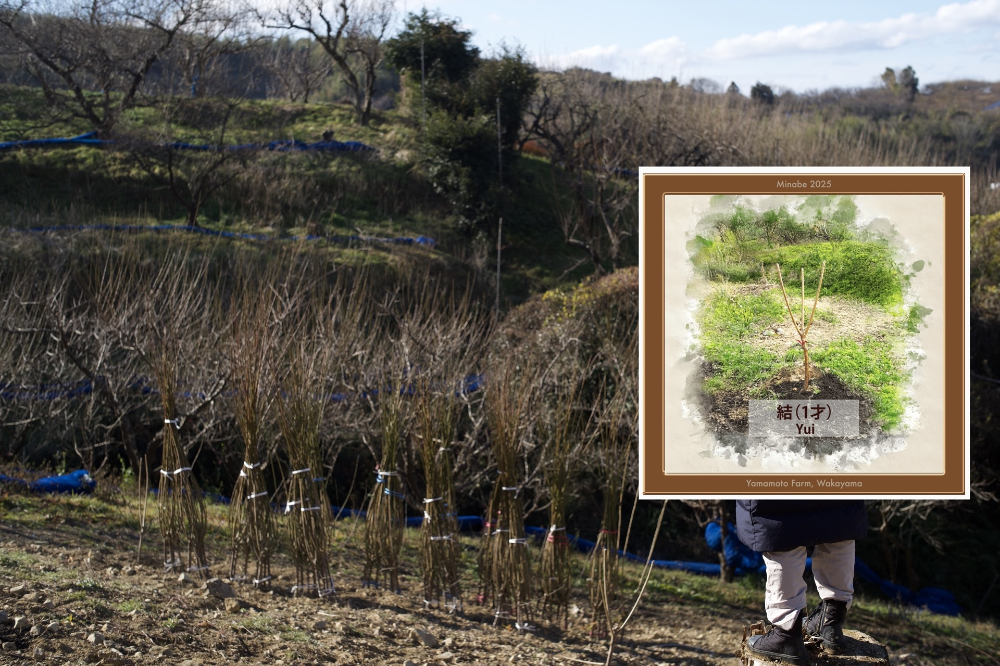
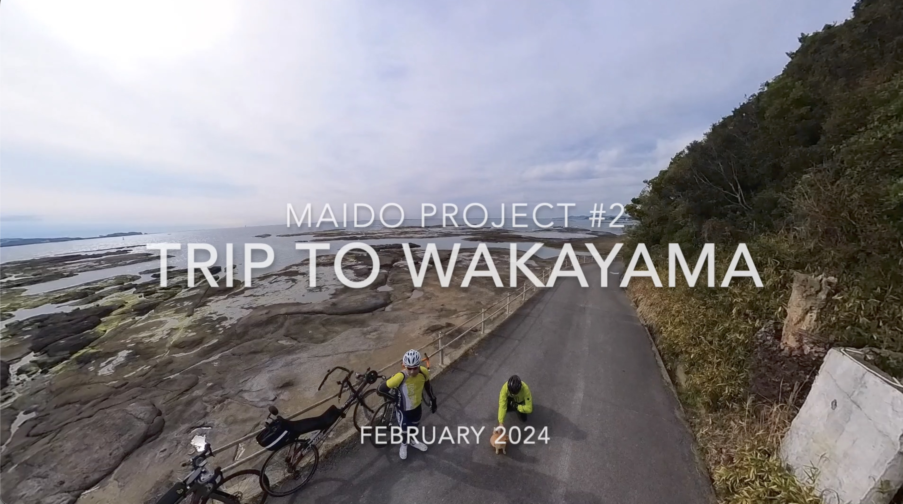
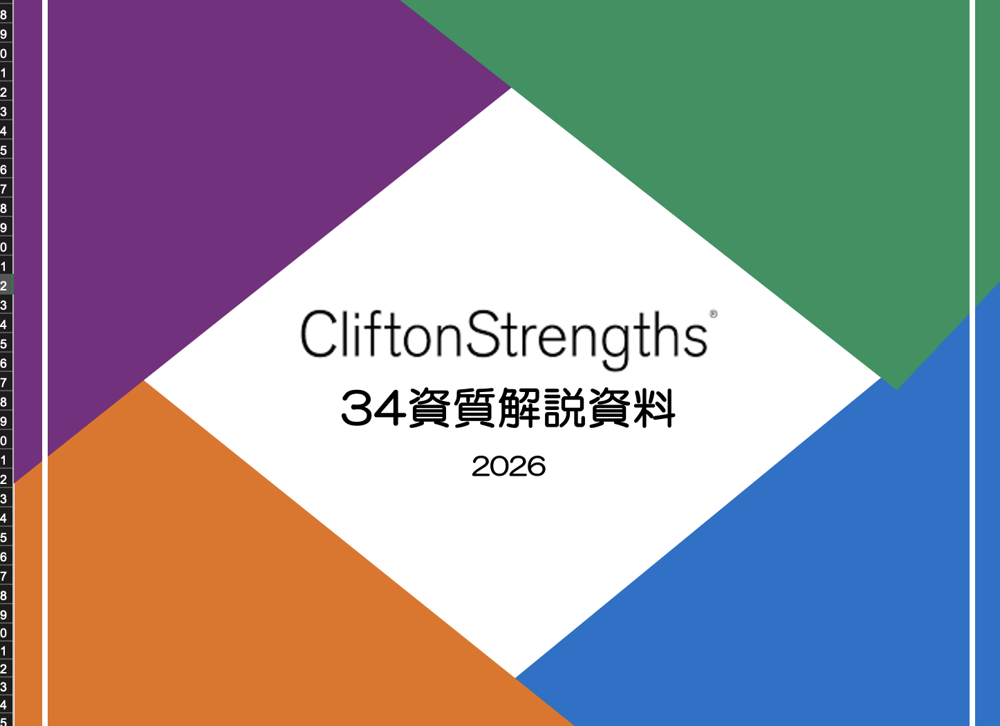

一過性のイベントで終わらせず、
最終的に地元が自走できるサポートまで伴走し抜く。
そうすることで、日本各地の持続可能な発展に貢献したい。

これまでに出会った全国各地の事例は、地域の可能性を考える上で「広い視点」を与えてくれました。ひとつの成功事例で終わらせず、仕組みとして全国へ広げていきます。

仕組みを当てはめるだけでなく、地元に最適な形で根付かせていくプロセスと、事業の継続性を重視しています。

一過性のイベントで終わらせず、最終的に地元が自走できるサポートまで伴走し抜く。それがCBCの約束です。
グローバル経験 × 現場実践 × テクノロジーの融合で、地域の可能性を最大化します。

国内、外資系企業での実務経験を活かし、"現場で確実に機能する"仕組みづくりをサポートします。
・国内外工場での製造・物流マネジメント
・研究所での厳格な衛生・品質管理
・海外との輸出入・サプライチェーン構築
これらの知見をもとに、世界基準の衛生管理（HACCP等）の導入から事業計画の立案まで一気通貫で伴走します。

地域の一次産業 × テクノロジーで、離れていても"つながってる感"を持てる仕組みをつくります。楽しいからこそ人が集まり、関係人口が生まれ、持続可能なコミュニティが育っていきます。
・NFT × 一次産業 ― 生産者と消費者をデジタルでつなぎ、応援・共感の関係をつくる
・観光・地方紹介アプリ ― 地域の魅力を届け、「知る・訪れる・関わる」の入口を広げる
・関係人口の創出 ― 楽しさを入口に、一過性で終わらない継続的なつながりを育てる

一人ひとりが持つ「強み」を見える化するプログラムです。現場では、限られた人材でいかに力を発揮するかが鍵。強みに目を向けることで、前に進む力が生まれます。地域の担い手の強みを活かしたチームづくりをサポートします。
・自分では気づきにくい才能を明らかにする
・互いの強みを知り、活かし合える地域チームへ
・強みへのフォーカスが、現場の自発性と突破力を生む

地域の魅力を映像で発信。撮影から編集、SNS展開まで一貫してプロモーション戦略をサポートし、地域のブランド価値を高めます。
全国各地の地域と共に歩んだプロジェクトの一部をご紹介します。
地域再生マネージャーとして、対米輸出に向けたHACCP（米国基準）認証の体制構築を主導。現場の教育プログラム策定から、国の関連機関へ向けた投資対効果などの事業計画立案まで一気通貫で伴走しています。

地元農家と協働し「農産物の年間オーナー制度（NFT）」を展開。デジタル技術と現地でのリアルな農業体験を掛け合わせ、動画配信等も活用しながら県外からの継続的な関係人口を創出しています。

グローバルな知見を活かし、海外メーカーと連携したインバウンド・国内観光向けアプリを提案。地域の観光資源をデジタル上で可視化し、新たな体験価値を生み出します。

国内大手メーカーのマネジメント層に対し、個人の「資質」を言語化し活用するワークショップを実施。自身とメンバーの強みを相互に理解し、それぞれの強みを掛け合わせることでチーム力の底上げを支援しました。このノウハウは、地域の事業体や行政組織にも応用可能です。

2001年に総合商社を退職した父が設立。海外製品の輸入、研修生の受け入れやボランティア、地域への日本文化の継承など、草の根の国際交流と地域貢献に尽力していました。
父の代から息づく「グローバルな視野を持ちながら、地域の人と深く関わる」という会社のDNAを受け継ぎ、2024年より事業を再開いたしました。
代表取締役 ／ Kenji Yonenaga
1963年大阪生まれ。国内大手食品メーカー、欧州系外資食品企業、北米拠点の食品商社などで、R&Dからサプライチェーンマネジメント、企業経営まで幅広く歴任。
30年以上のグローバルかつ実務的なマネジメント経験を持ち、現在は兵庫県宝塚市を拠点に、全国各地で地域創生プロジェクトを推進中。

R&D・品質管理からキャリアをスタート
グローバル基準のサプライチェーン管理を経験
海外ビジネス・企業経営を歴任
全国各地で地域創生プロジェクトを推進